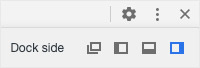
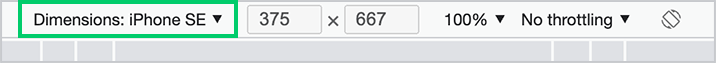
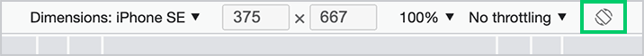

L'inspecteur 🕵️♂️ est un outil précieux, présent dans tous les navigateurs modernes. Il permet de modifier une page à la volée, de trouver la source d'un problème et de tester rapidement différentes pistes de solutions.
Il est en quelque sorte au développeur web ce que la lunette de visée est au tireur d’élite. Imaginer un tireur “professionnel” tirant “au feeling” sans jamais utiliser sa lunette. Difficile de le prendre au sérieux, non? Développer en se privant de l’inspecteur web est l’équivalent.
Pour afficher l'inspecteur, vous pouvez:
- Faire un clic droit sur la souris 🖱️ et choisir l'option Inspecter.
-
Utiliser le raccourci clavier ⌨️
- Windows
ctrl +shift +i ouF12 - Mac
command +option +i ouF12
- Windows
Disposition
Dans le coin supérieur droit ↗️ de l’inspecteur, vous remarquerez l'icône ⋮ permettant d'accéder aux paramètres d'affichage de l'inspecteur. La première option, Dock side, vous permet de sélectionner où l'inspecteur devrait afficher, soit sa disposition. Ces différentes options vous permettent d’optimiser votre station de travail en fonction de votre environnement.
 L’affichage à droite est sélectionné sur cette capture d’écranÉcrans restreints
Sur un écran restreint, par exemple sur un ordinateur portable, l’option d’afficher l’inspecteur au bas de l’écran se veut la plus optimale. Bien qu’elle coupe une partie du contenu, celle-ci permet d’y accéder à l’aide d’un simple défilement vertical.
L’affichage sur les côtés en contrepartie coincera le contenu dans une zone restreinte, générant souvent une barre de défilement verticale et horizontale, rendant ainsi l’accès au contenu à déboguer plus fastidieux.
L'affichage détaché quant à lui implique d’alterner constamment entre la fenêtre de l’inspecteur et celle de la page elle-même, ce qui peut ralentir grandement notre progression.
Écrans larges
De nos jours les écrans externes sont tous relativement larges. En fait, les écrans sont si larges que la majorité des sites sont optimisés afin d’afficher dans une zone plus restreinte que celle allouée par ceux-ci. Ainsi, afficher l’inspecteur sur le côté se veut l’option la plus optimale puisqu’elle permet de garder la hauteur du contenu intact, et donc d’éviter d’avoir à effectuer plusieurs défilements verticaux superflus, alors que la diminution de largeur se traduit généralement en la disparition d’une zone de remplissage ou en une légère condensation du contenu, mais aucune perte réelle de la zone de contenu.
Écrans multiples
La majorité des développeurs ont deux écrans: celui de leur portable, ainsi qu’un écran externe. Cette particularité leur permet d’utiliser de façon optimale le mode détaché, en plaçant leur page web dans leur écran de plus grande taille et l’inspecteur dans l’autre.
Remarquez en haut à gauche de l'inspecteur l'icône de l'outil de simulation d'appareil (icône de cellulaire devant une tablette).
En cliquant sur cette icône, elle deviendra bleue et vous permettra de sélectionner dans un menu déroulant, se trouvant au sommet de votre page, la résolution de l'appareil à simuler.
Cette liste contient certaines des résolutions les plus populaires, par exemple:
- iPhone
- iPad
- iPad Pro
- Pixel
- Galaxy
- Etc.
Orientation
Il est aussi possible de changer l'orientation de l'appareil afin d'avoir un aperçu en mode paysage via l'icône d'appareil avec des flèches complètement à droite.
Responsive
Il est aussi possible de choisir l'option Responsive dans le menu des appareils afin de modifier librement la résolution de l'écran à l'aide des poignées || et = se trouvant respectivement sur le côté droit, le bas et le coin de la fenêtre.
Ce mode n'impose pas de largeur minimale comme le fait normalement le navigateur. Qui plus est, la dimension de la fenêtre est affichée dans la barre de menu, permettant ainsi de savoir précisément la taille de notre affichage et ainsi de déboguer plus précisément.